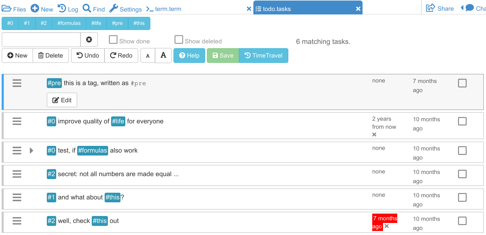

Task Lists
Use task lists to help organize your work on a CoCalc project. Like everything in CoCalc, multiple people can simultaneously edit task lists.
Creating a Task List
To create a task list, open a file with the extension “.task”. This extension is added automatically if you click “(+)New”, enter a filename, and then click “Todo list”.
Editing the Description (Markdown)
Double click or use the cursor keys (and press enter) to edit a task, or create a new task. Use Github style markdown to describe your task, use LaTeX to typeset mathematics (use \$ for a dollar sign), use [ ] and [x] to create checklists, and press shift+enter to save your changes. The editor respects the themes you select in account settings, and external links open in another browser tab. You can toggle showing the full description or only everything up to the first blank line (use mod + space to do from keyboard). Of course simultaneous synchronized editing of tasks by multiple clients is fully supported.
Completing a task
Click on the checkbox in the last column to mark a task as done. It is removed from the list of open tasks, and you can reveal completed tasks by clicking on “Show done” at the top.
Moving tasks
In custom order (the default) click and drag  to change the order of the tasks.
to change the order of the tasks.
Due date
Each task has an optional due date (and time), which you can set by clicking on the due date (or none). You can see when the task is due, when you last edited it, and click the due column to sort by due date. View finished tasks by selecting the done checkbox.
Search
Enter terms in the search box in the upper left to show only tasks containing all search terms.
Keyboard shortcuts
Let mod be any of control, alt, or command keys. Use mod+s to save, mod+f to find, mod+n to make a new task, mod+space to toggle showing or minimizing description, and mod+arrow to move a task up or down the list. Use arrows (or j and k) to change which task is selected, enter to start editing a task description, and shift+enter to stop editing.
File format
A task list is stored as a file with extension .tasks that contains one JSON line per task.
You can directly edit this file with other tools (e.g., vim on the command line) and changes should appear in the task list within a few seconds.
You can have many task lists, store them in revision control, recover them from snapshots, etc.
You can also create a task list by creating a file foo.tasks that has one description per line (as a string):
"the first task"
"another task"
Or, with one JSON line per task:
{"desc":"the first task"}
{"desc":"another task"}
Additional optional fields are position, which is a float that determines sort order, done, due and last_edited, which are the number of milliseconds since the epoch in the UTC time zone, and task_id which is a v4 UUID.

{kind=link}